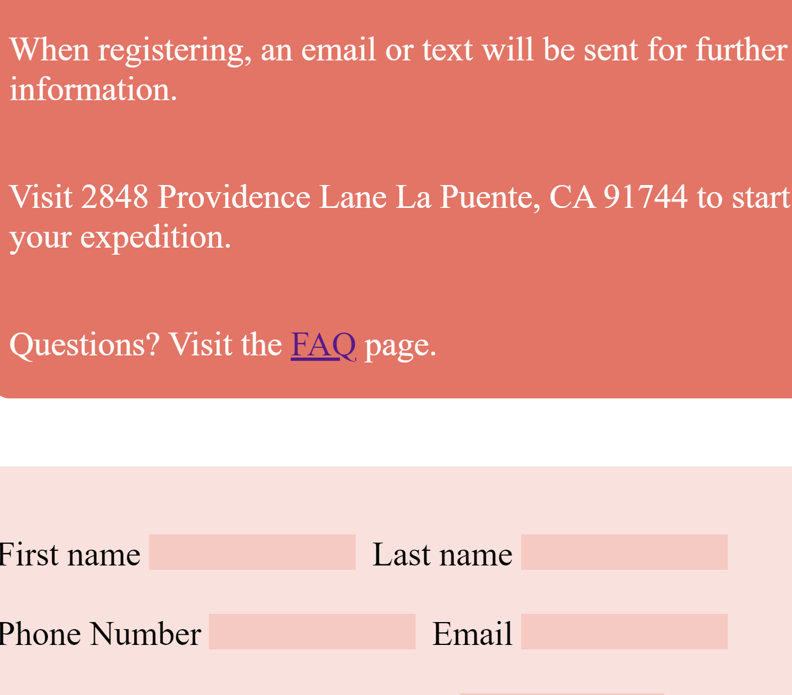

The Chronoshift Expedition was my first project using HTML and CSS. I designed and made a website about a time traveling safari based on the short story, “A Sound of Thunder” by Ray Bradbury. We were required to have a Home, About, Expedition, Policy, and Book Now page. Each page needs to have a footer, navigation bar, and hero image with different content.
To start off, we needed to make a wireframe using Figma to plan out where everything goes on the website. At first, I thought wireframing was a waste of time and it was very tedious. But as I started actually coding, it became very helpful. Along with Figma, I used Adobe Photoshop to create custom images for my website. I made the logo and an image of a clock split in half to represent the consequences of not following the rules.
Since this was my first project with little experience in HTML and CSS, it was very difficult to code my website to look exactly like my wireframe. When we learned flexbox, I had to redo all my CSS and it was very frustrating. However, this project is a huge accomplishment since I went into it with no experience in coding and came out of it very confident in my abilities to code.
If you want to check it out, here is the link https://redchronoshift.netlify.app/